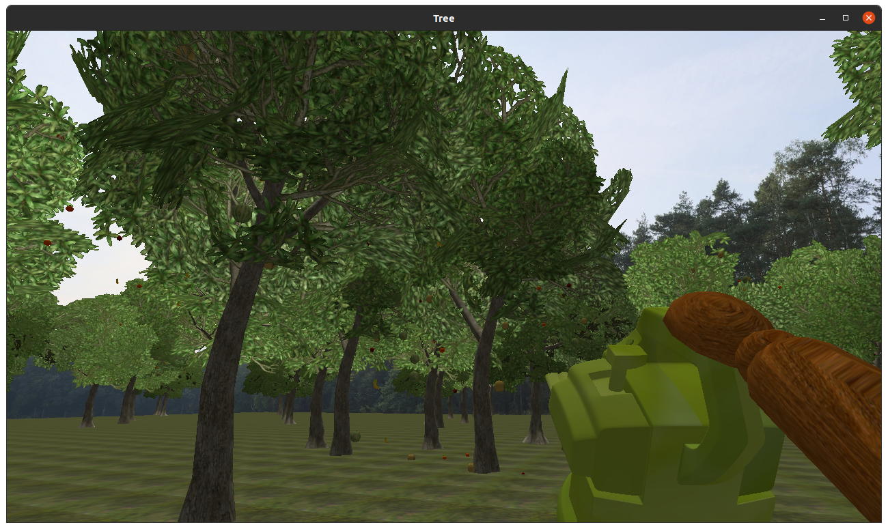
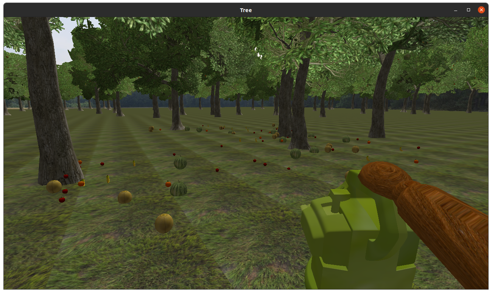
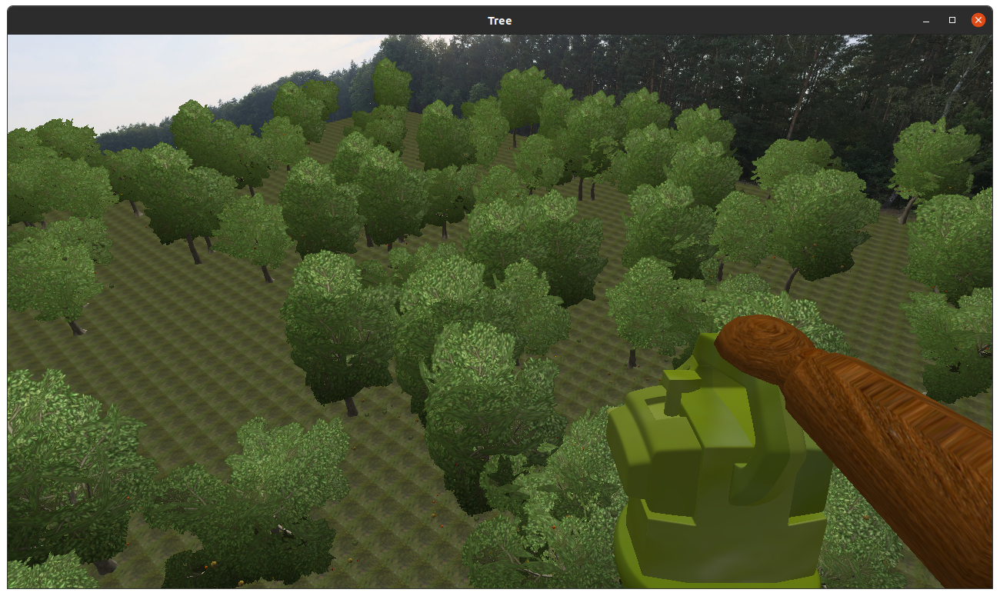
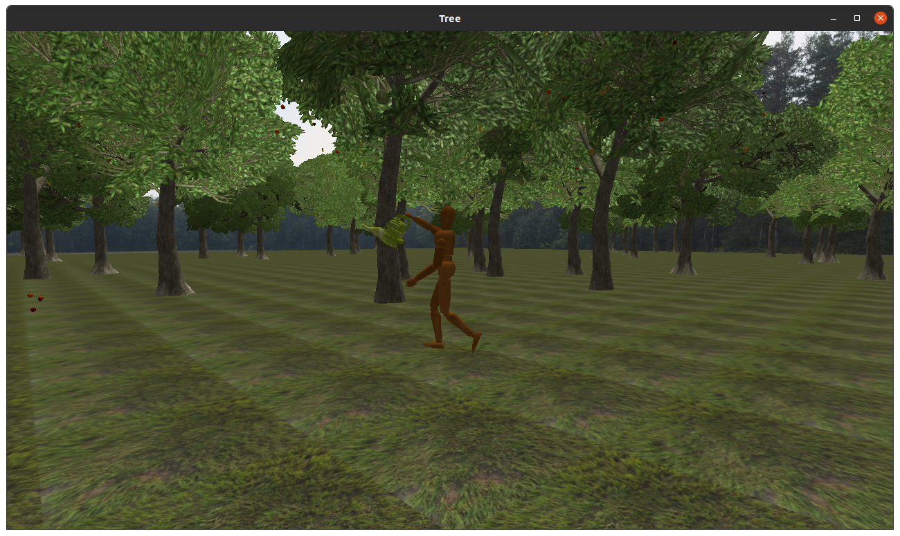

CS 180 Maxwell Jung UCSB 2021
The scene shows a dummy with a leaf blower walking through a forest. The leaves sway at different frequency/magnitude depending on their distance and orientation to the leaf blower. The leaf blower can also shake fruits off the trees.




The dummy can move horizontally using the standard WASD keys and vertically using space bar and left control key. Pressing F toggles the camera between first person view and third person view. The third person camera is fixed at the center of the world and follows the dummy.
The dummy has a walking animation when it moves around the world. This is achieved by setting the angle of each joint of the dummy using hierarchical modeling. For smooth animation, the changes in joint angles have to be continuous over time. However, specifying a continuous function for each joint angle is tedious and impractical, so keyframe animation is used. Keyframe animation works by taking a snapshot of the animation (called keyframe) at regular intervals and interpolating the animation between adjacent keyframes. For the walking animation of the dummy, the keyframes were extracted every 10 frames from a reference video of a person walking (Resource 1). The angles of each joint in the keyframe were measured then interpolated using Centripetal Catmull–Rom spline (Resource 2).
The animation of the leaves blowing is done by deforming part of the leaves mesh in the vertex shader (Resource 3). The vertex of the mesh affected by the wind gets translated in the direction of its normal vector. This translation is sinusoidal as a function of time to achieve a swaying effect. The magnitude of the sway is affected by distance from leaf blower, angle from leaf blower, and orientation of the leaves. For example, if the leaf is perpendicular to the wind, it catches more wind and sways further. The frequency of sway is affected by the orientation of the leaves.